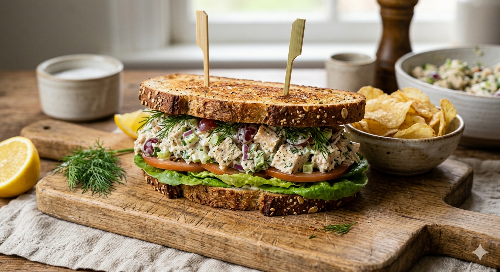

Tuna Sandwhich

Description
A simple and popular sandwich made with canned tuna and mayonnaise, often enjoyed as a quick, protein-rich meal.
Ingredients
- Canned tuna (drained)
- Mayonnaise
- Salt and pepper
- Lemon juice (optional)
- Bread
- Cucumber slices (optional)
Steps
- Drain the tuna and place it in a bowl.
- Add mayonnaise and mix well.
- Season with salt, pepper, and a splash of lemon juice if using.
- Spread the tuna mixture onto bread.
- Add cucumber slices if desired.
- Close the sandwich, slice, and serve.
Home